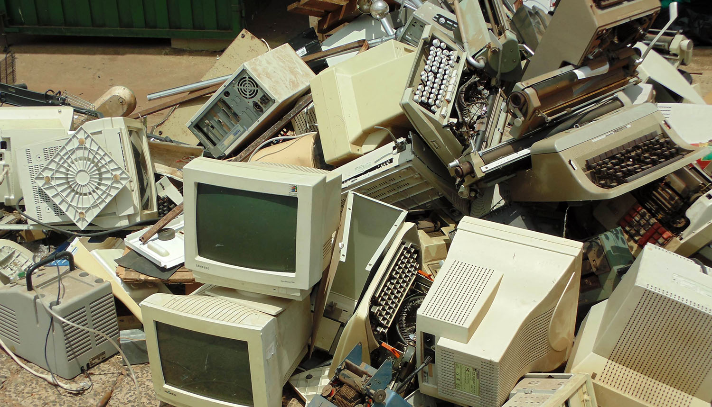
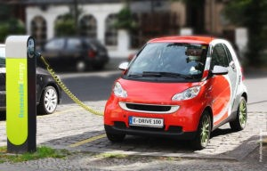
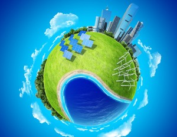
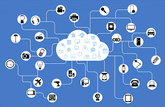

Certamente você já sabe que a humanidade está consumindo 50% a mais em recursos naturais
renováveis – água, ar, terra agricultável e absorção de resíduos – do que o planeta é capaz de
regenerar.
O ato do consumo tem um papel transformador da realidade em que vivemos. Com a conscientização de
nossas escolhas cotidianas de consumo, na compra, no uso e no descarte de produtos ou serviços, podemos
contribuir para criar uma sociedade mais acolhedora e mais saudável.
 Produtos duráveis contribuem para que menos resíduos sejam gerados, evitando a poluição e
obstrução de vias e canais de escoamento de água – o que traz riscos de doenças, especialmente quando se
considera que boa parte ainda não vão para aterros sanitários.
Produtos duráveis contribuem para que menos resíduos sejam gerados, evitando a poluição e
obstrução de vias e canais de escoamento de água – o que traz riscos de doenças, especialmente quando se
considera que boa parte ainda não vão para aterros sanitários.
Optar por algo que não precisa ser substituído rapidamente ou que você “usa e joga fora” evita que mais recursos naturais sejam usados para produzir um novo item. Como no caso emblemático da substituição das sacolas plásticas descartáveis por sacolas duráveis. Mesmo que um produto durável seja mais caro, de imediato, que o descartável, ele pode “reembolsar” o consumidor ao longo do seu período de uso. Um bom exemplo é o caso das lâmpadas LED, que duram até 13 anos e consomem muito menos energia elétrica para a mesma luminosidade. O preço maior pago pela LED é “devolvido”, pela redução da conta de energia do consumidor.A obsolescência acelerada (itens que são programados para durar menos) também é algo a se levar em conta na escolha por duráveis.
 A pouca durabilidade dos produtos e a dificuldade de consertá-los não acontecem por acaso. A troca rápida, segundo organizações, define um padrão de produção praticado há quase um século pela indústria: a obsolescência programada. O conceito consiste em reduzir a vida útil e dificultar o conserto de produtos, modificando os projetos e peças com mais frequência, principalmente eletrodomésticos e eletroeletrônicos, para garantir que sejam usados pelo menor tempo possível, acelerando o ciclo de consumo.
Há sempre uma novidade no mercado aparentemente indispensável: um novo celular com câmera de maior resolução, uma nova geladeira que oferece o gelo diretamente na porta. Ou, mesmo se temos sapatos suficientes, aparece a urgência em ter aquele novo modelo que será valorizado na próxima estação. A lógica da compra pela compra em si, desprovida de um conteúdo de real necessidade, assim como a troca desnecessária de produtos ainda em plena vida útil, extrapola o limite do suficiente para cada um. E, com isso, extrapola o limite da sustentabilidade que é garantir “o suficiente, para todos, para sempre”.
A forte insustentabilidade social e ambiental da sociedade atual exige a busca por novos princípios para a publicidade: ela deve dialogar com a demanda do consumidor por bem-estar, mais do que pelo pretenso significado da compra e do uso de cada produto; por inovação na direção de um mundo mais sustentável, mais do que pela novidade em si.
A evolução tecnológica pode ser uma grande aliada da sustentabilidade, colaborando com o combate ao
desperdício, a melhoria na qualidade dos transportes, da saúde, a criação de produtos mais duráveis, a
reciclagem e o monitoramento de atividades ilegais, por exemplo.
Conheça algumas tendências em tecnologia sustentável que prometem contribuir para a solidificação de um
novo modelo de desenvolvimento:
Carros Elétricos
 Hoje, há opções de carros elétricos, com motores que utilizam baterias como fonte de energia, e de carros híbridos, em que podem ser usados baterias ou motores que funcionam a partir de combustíveis. Nos carros elétricos não há queima de gasolina ou diesel, o que contribui para a redução significativa das emissões de gases de efeito estufa (GEE).
Geração Distribuída
Desde 2012, é permitido no Brasil que os cidadãos gerem a sua própria energia elétrica a partir de
fontes renováveis e, caso haja excedente na produção, forneçam energia para a rede de distribuição de
sua localidade (Resolução Normativa da ANEEL nº 482/2012). Isso é o que chamamos de geração
distribuída.
Essa modalidade de geração de energia pode proporcionar diversos benefícios ao sistema elétrico, como:
Redução dos Impactos Ambientais
 Fontes renováveis, como a solar e a eólica, são comumente utilizadas na geração distribuída. Assim, o sistema energético se torna mais limpo, colaborando para a redução das emissões de GEE.
Minimização de Perdas
A energia produzida é consumida localmente e pode ser compartilhada pelos consumidores que a produzem e pelas distribuidoras. Além disso, as linhas de transmissão ficam menos sobrecarregadas, reduzindo a perda de energia.
Diversificação da Matriz Energética
Diferentes fontes podem gerar energia em períodos do dia, do ano e em climas diferentes. Assim, diversificar a matriz energética é uma forma de aumentar a segurança, garantindo que a energia seja produzida em diversos períodos e condições.
Redução de Custos
Além de reduzir gastos ao produzir a própria energia, quando a quantidade produzida for superior à energia consumida no período, o consumidor pode obter alguns benefícios. Conforme dissemos acima, no Brasil, é possível obter créditos que serão abatidos na fatura dos meses seguintes. Dessa forma, a geração distribuída é uma inovação que pode aliar economia financeira, autossustentabilidade e consciência socioambiental, trazendo benefícios não só aos consumidores que optam por utilizá-la, mas também ao sistema elétrico.
Tecnologias que Favorecem a Economia Compartilhada
A economia compartilhada é um modelo econômico em que pessoas podem emprestar ou alugar bens e prestar serviços entre si. Isso significa que uma pessoa pode alugar o seu carro quando não estiver o utilizando, o que também pode acontecer com outros objetos, como casas, bicicletas e roupas. Embora mercados de aluguel já existam há algum tempo, a internet facilitou o encontro entre as pessoas que precisam de algo por um período determinado e as que possuem esses objetos para alugar ou emprestar. Cada vez mais, encontramos aplicativos para celular, sites e redes sociais capazes de promover esse contato, colocando disponíveis produtos que podem ser trocados, emprestados ou alugados. Há diversas iniciativas que seguem essa lógica, como o Airbnb, que conecta viajantes a pessoas dispostas a alugar espaços diversos durante períodos variados e o Getaround, que permite o uso compartilhado de carros por meio da empresa, que fica responsável por alugar um veículo enquanto seu dono não o estiver usando. Mas como esse modelo econômico pode ser sustentável? Além de movimentar o mercado, as formas de compartilhamento podem reduzir significativamente a compra de produtos específicos. O mercado de compartilhamento de carros, por exemplo, pode colaborar para a redução da compra de veículos e das emissões de CO2 na atmosfera. 
Internet das Coisas
A expressão Internet das coisas (IoT) é uma tradução de Internet of Things. O termo, criado nos anos 90, foi evoluindo à medida que a internet sem fio passou a ser mais presente na vida das pessoas, e descreve um fenômeno que vivemos hoje: cada vez mais objetos estão conectados à internet e se comunicam mutuamente. Isso acontece por meio de softwares e sensores que transmitem dados para uma rede. A IoT pode levar mais eficiência para a indústria, contribuindo para a construção do que chamamos de Indústria 4.0. Esse conceito de indústria considera as principais inovações tecnológicas como parte dos processos de produção industrial, que podem se tornar cada vez mais eficientes e autônomos. Por exemplo, é possível interligar e configurar máquinas para que sinais de perda de produtividade ou falhas operacionais sejam percebidos de forma antecipada. Isso pode trazer otimização de processos, aumento na produtividade e eliminação de falhas. Assim, podemos produzir mais com menos recursos.